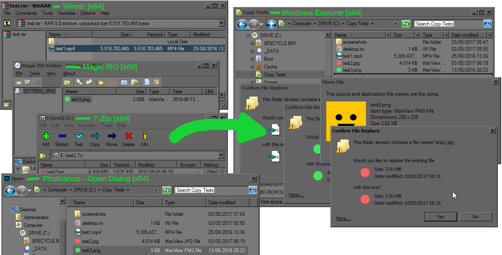
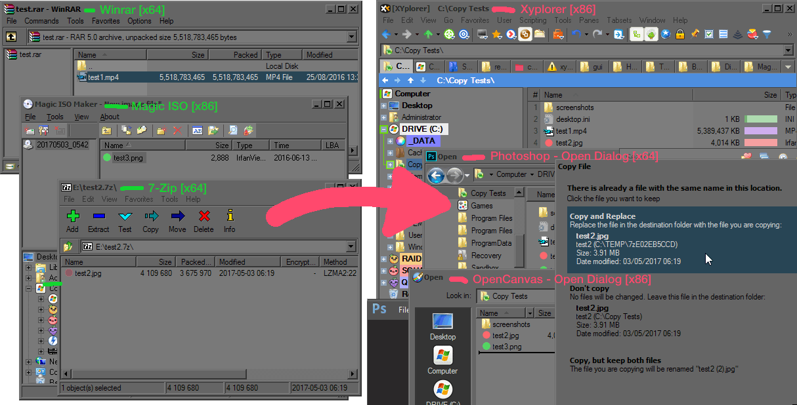

| Classic Shell http://www.classicshell.net/forum/ |
|
| 64-bit Copy dialog not working in 32-bit apps http://www.classicshell.net/forum/viewtopic.php?f=12&t=7524 |
Page 1 of 1 |
| Author: | Display [ Tue Apr 25, 2017 2:12 pm ] |
| Post subject: | 64-bit Copy dialog not working in 32-bit apps |
Hello! I've recently noticed that the 64-bit Classic Shell Copy dialog doesn't appear in any 32-bit applications. For example, if I'm dragging files from an x64 application like Winrar/7zip into an x86 application, such as XYplorer, the default (hideous) Windows Explorer copy dialog is invoked. Is there any way to allow for the Classic Shell to always be used regardless of bit state? Maybe via the registry with some CLSID edits? Thank you and any help would be greatly appreciated! |
|
| Author: | Gaurav [ Wed Apr 26, 2017 3:40 am ] |
| Post subject: | Re: 64-bit Copy dialog not working in 32-bit apps |
Are you using Windows 7? |
|
| Author: | Display [ Wed Apr 26, 2017 6:14 am ] |
| Post subject: | Re: 64-bit Copy dialog not working in 32-bit apps |
Ah yes! I completely forgot to mention the OS! I'm running: Windows 7 Ultimate x64 SP1 |
|
| Author: | Ivo [ Tue May 02, 2017 6:47 am ] |
| Post subject: | Re: 64-bit Copy dialog not working in 32-bit apps |
Possibly the 32-bit shell extension was not correctly registered. From an admin command prompt type: regsvr32 "C:\Program Files\Classic Shell\ClassicExplorer32.dll" (replace the C:\Program Files" with the actual path where you installed Classic Shell, if it is different) It is also possible that some programs have their own copy dialogs that happen to look similar to the one in Windows but is not the same. In such case Classic Shell can't do anything. |
|
| Author: | Display [ Wed May 03, 2017 12:09 am ] |
| Post subject: | Re: 64-bit Copy dialog not working in 32-bit apps |
Thank you for the suggestion! Okay, I've successfully registered the ClassicExplorer32.dll and rebooted. I did some more tests and this it what I've found: Drag-Drop from almost any x86 or x64 application into 64-bit Windows Explorer will bring up the Classic Shell Copy dialog as expected:  However, Drag-Drop from any x86 or x64 application into any x86 application or any x86/x64 Open/Save dialog box will bring up the default Windows Copy dialog:  Is it possible to somehow intercept *all* copy/replace requests and invoke the Classic Shell Copy? Now that I'm seeing the default OS Copy dialog more often (due to using XYplorer) I'm really struggling to make decisions whenever prompted by Copy/Replace... it's such a confusing design! |
|
| Page 1 of 1 | All times are UTC - 8 hours [ DST ] |
| Powered by phpBB® Forum Software © phpBB Group https://www.phpbb.com/ |
|